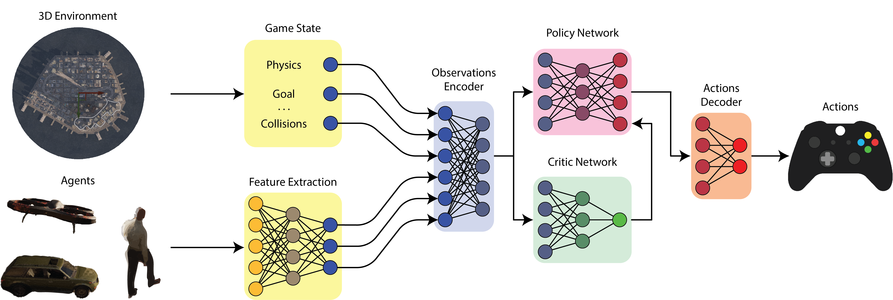

Architecture

Simplified schematic of our REP architecture. The goal here is to map physical and visual observations from multiple kinds of agents in a big, open world into a meaningful set of actions. We do so by first creating an encoding of the visual observations using a DNN encoder. Then, we concatenate the normalized physical observations (i.e. game state) with the newly created visual observations. We then train the agents to optimize a policy that produces the best set of actions for a given reward function, using the PPO algorithm. At inference time, the same diagram applies, but the computation of the visual features runs in-engine using NNE for optimal performance.